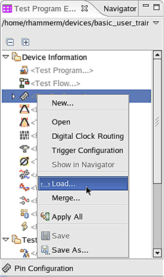
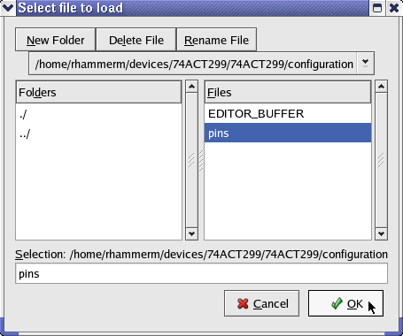
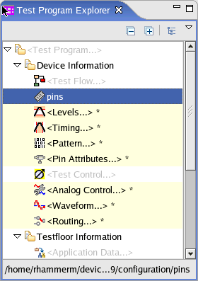

Loading a single setup component
Before you can load setup components, you have to take the following actions:
To load a single setup component:
- In the Test Program Explorer View highlight the component you want to load, for example, the
Pin Configuration as shown in the figures below. Right-click the highlighted component and
select Load....

- Select the file and click OK. You can also load a setup file that
belongs to another device. The text [external] is then displayed besides
the file name.

- The file name is displayed instead of the component.

Note You can load the same setup component repeatedly, the software will not check whether the component has already been loaded.Note When you have changed but not yet saved a setup component, you can discard your changes by using the Reload menu item.